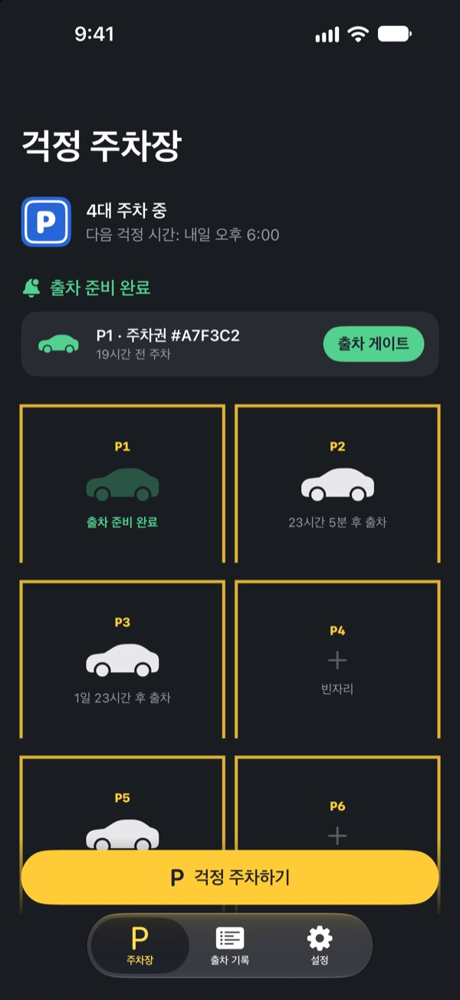
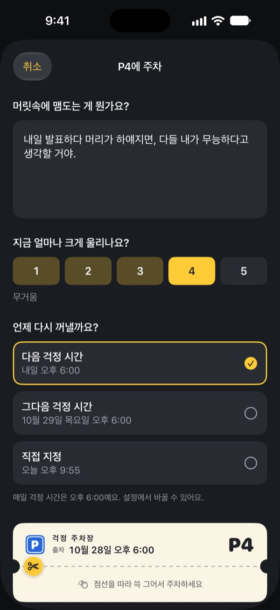
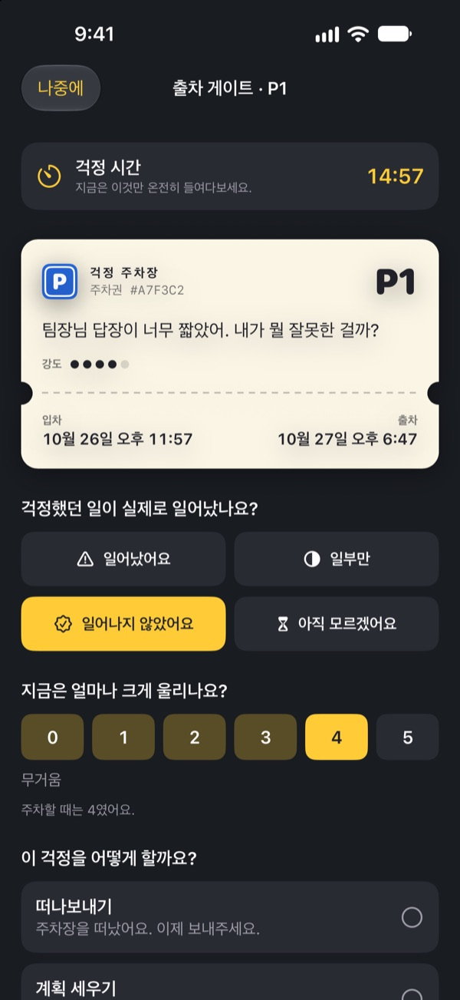
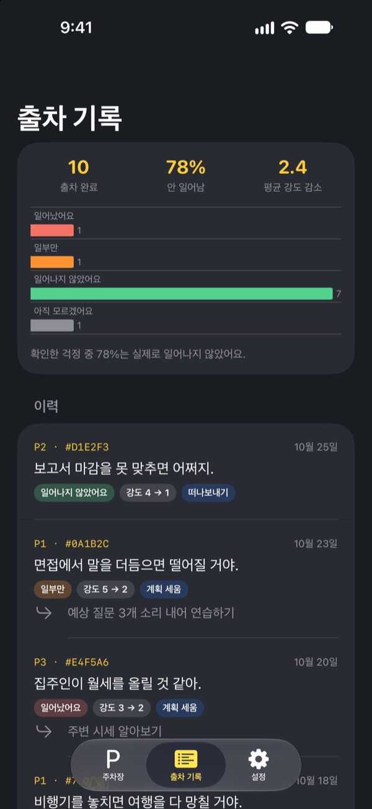

걱정은 잠시
주차해 두세요
자기 전 머릿속을 맴도는 걱정을 주차권에 적어 맡기세요. 정해 둔 걱정 시간이 되면 다시 돌려드릴게요. 그때까지는 들고 다니지 않아도 괜찮아요.
모든 기능이 무료이고, 광고도 계정도 없어요.

걱정 하나를 주차해 보세요
예시를 그대로 두거나 지금 머릿속에 있는 걸 적어 보세요. 주차하면 흐리게 가려지고, 걱정 시간에 다시 꺼내 봅니다.
누우면 시작되는 걱정, 익숙하지 않나요?
불을 끄면 낮에 한 말 한마디, 내일 회의, 아직 안 온 답장이 차례로 떠올라요. 생각하지 말자고 할수록 더 또렷해지죠. 걱정 주차장은 걱정을 억지로 밀어내지 않아요. 적어서 자리를 정해 주고, 마주할 시간을 따로 잡아 줘요.
적으면 머릿속에서 내려와요
머릿속에서 들리는 그대로 적고, 지금 얼마나 크게 울리는지 1부터 5까지 골라요. 주차권을 뜯으면 걱정은 흐리게 가려진 채 주차장에 남아요.
다시 떠오르면 "이미 자리가 있어"라고 말해 주세요. 마주할 시간은 따로 있으니까요.

걱정 시간에 15분만 마주해요
매일 정해 둔 걱정 시간에 알림이 와요. 출차 게이트에서 걱정을 다시 읽고, 정말 일어났는지, 지금은 얼마나 크게 울리는지 확인해요.
그다음 떠나보내거나, 작은 다음 할 일 하나로 바꾸거나, 다음 걱정 시간으로 다시 주차해요.

내 걱정이 얼마나 맞았는지 보여요
출차한 걱정이 쌓이면 실제로 일어난 비율과 평균 강도가 얼마나 줄었는지 한눈에 보여요.
걱정은 미래를 실제보다 나쁘게 예측하곤 해요. 기록이 쌓일수록 다음 걱정을 덜 믿게 돼요.

시작은 세 단계면 돼요
- 1
걱정 시간을 정해요
처음 열면 매일 걱정을 마주할 시간을 골라요. 나중에 설정에서 바꿀 수 있어요.
- 2
걱정 하나를 주차해 봐요
지금 가진 걱정을 바로 주차하고, 주차 전후로 강도가 어떻게 달라지는지 느껴 봐요.
- 3
출차 알림을 허용해요
걱정 시간이 되면 칸 번호만 담긴 알림이 와요.
왜 효과가 있을까요
- 정해진 시간에만 걱정하기
- 걱정을 매일 짧은 걱정 시간으로 옮긴 사람들은 걱정하는 시간이 줄고, 불안과 수면 문제도 덜 겪었어요. (Borkovec 외, 1983 · McGowan & Behar, 2013)
- 적어서 내려놓기
- 구체적인 계획을 세우면 끝나지 않은 일이 생각에 덜 끼어들었고, 자기 전 5분 동안 할 일을 적은 사람들은 더 빨리 잠들었어요. (Masicampo & Baumeister, 2011 · Scullin 외, 2018)
- 실제로 일어났는지 확인하기
- 만성적으로 걱정하는 사람들이 자기 걱정을 기록해 보니 91%는 실제로 일어나지 않았어요. (LaFreniere & Newman, 2020)
걱정 주차장은 인지행동치료(CBT)에서 수십 년간 연구된 ‘걱정 미루기’ 기법을 바탕으로 만들었어요.
모든 기능이 무료예요
무료
- 주차 칸 무제한
- 매일 걱정 시간 알림, 출차 시간 직접 지정
- 출차 게이트와 출차 기록
- 출차 인사이트: 실제로 일어난 비율, 강도 변화
팁 (원할 때만)
- 도움이 됐다면 개발자에게 작은 팁을 보낼 수 있어요
- 작은 팁, 중간 팁, 큰 팁 중에서 골라요
팁은 기능을 열지 않아요. 보내지 않아도 모든 기능을 그대로 써요.
광고, 계정, 서버, 분석 도구가 없어요. 적은 내용은 모두 이 iPhone에만 저장돼요.
자주 묻는 질문
걱정 시간은 어떻게 바꾸나요?
설정 탭의 걱정 시간에서 바꿀 수 있어요. 새로 주차하는 걱정부터 바뀐 시간이 적용되고, 이미 주차된 걱정은 원래 출차 시간을 그대로 유지해요.
출차 알림이 오지 않아요.
설정 탭의 알림 항목을 확인해 주세요. “알림이 꺼져 있어요”가 보이면 iOS 설정 열기를 눌러 알림을 켜 주세요. 집중 모드나 방해금지 모드가 켜져 있으면 알림이 조용히 도착할 수 있어요. 알림을 받지 못해도 출차 시간이 된 걱정은 주차장 화면에 ‘출차 준비 완료’로 표시돼요.
알림에 제 걱정 내용이 보이나요?
아니요. 알림에는 “P3 출차 준비 완료”처럼 주차 칸 번호만 나와요. 걱정 내용은 앱을 열어 출차 게이트에 들어가야만 보여요.
걱정 시간 전에 다시 보고 싶어요.
주차장에서 해당 차를 누른 뒤 지금 출차 게이트로 보내기를 고르세요. 다만 걱정 미루기는 기다릴수록 효과가 좋아요. 대부분의 걱정은 걱정 시간쯤 되면 작게 느껴져요.
기록을 새 iPhone으로 옮길 수 있나요?
모든 기록은 iPhone 안에만 저장되고, 별도의 계정이나 동기화 기능은 없어요. iCloud 백업이나 컴퓨터 백업으로 새 iPhone을 복원하거나 기기 간 전송을 쓰면 다른 앱 데이터와 함께 옮겨져요.
기록을 지우고 싶어요.
출차 기록 탭에서 항목을 왼쪽으로 밀면 삭제할 수 있어요. 앱을 삭제하면 모든 기록이 함께 지워져요.
치료 효과가 있는 앱인가요?
걱정 주차장은 인지행동치료(CBT)의 ‘걱정 미루기’ 기법을 바탕으로 한 셀프케어 도구예요. 의료기기가 아니며 전문적인 진단이나 치료를 대신하지 않아요.
너무 힘들 때는 어디에 연락하나요?
걱정이 일상을 크게 방해하거나 스스로를 해치고 싶은 생각이 든다면 혼자 견디지 말고 도움을 요청해 주세요. 자살예방 상담전화 109(24시간), 정신건강 위기상담 1577-0199, 긴급 상황에는 112나 119로 연락하세요.
궁금한 점이나 의견은 leeo@kakao.com로 보내 주세요.